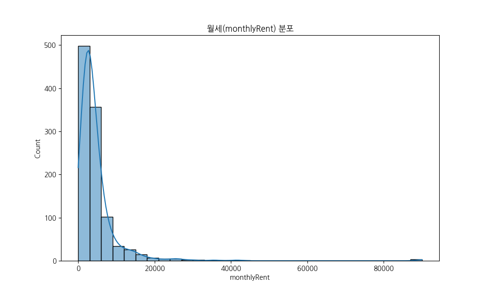
월세 분포 분석
해석 방법
월세는 대부분 100~300만 원 사이에 집중되어 있으나, 일부 초고가 매물로 인해 우측으로 긴 꼬리를 가진 분포를 보입니다.
비즈니스 인사이트
대다수의 매물이 월세 200~500만 원 구간에 집중되어 있어, 중소형 프랜차이즈나 개인 창업자들의 주된 타겟팅 구간이 이 지점임을 알 수 있습니다. 타겟 고객군에 따른 차별화된 마케팅 전략이 필요합니다.
강남·서초 지역 상업용 부동산 매물 데이터 심층 분석
* 상세 주소 데이터 미비로 인해 인근 지하철역 위치를 기반으로 랜덤 지터링을 적용한 시뮬레이션 데이터입니다.

월세는 대부분 100~300만 원 사이에 집중되어 있으나, 일부 초고가 매물로 인해 우측으로 긴 꼬리를 가진 분포를 보입니다.
대다수의 매물이 월세 200~500만 원 구간에 집중되어 있어, 중소형 프랜차이즈나 개인 창업자들의 주된 타겟팅 구간이 이 지점임을 알 수 있습니다. 타겟 고객군에 따른 차별화된 마케팅 전략이 필요합니다.
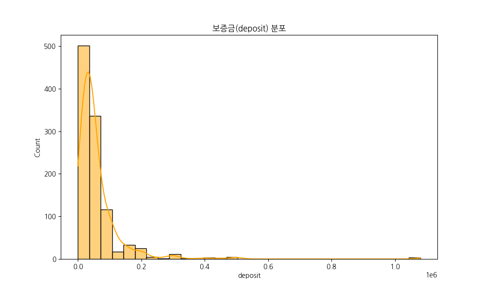
보증금은 수천만 원에서 수억 원대까지 넓게 분포하며, 특정 가격대(예: 3000, 5000만 원)에서 빈도가 높게 나타나는 경향이 있습니다.
보증금 5,000만 원 전후의 매물이 가장 많은 비중을 차지하는데, 이는 초기 자본금 확보가 중요한 예비 창업자들에게 가장 진입 장벽이 낮은 구간이자 경쟁이 가장 치열한 구간임을 의미합니다.
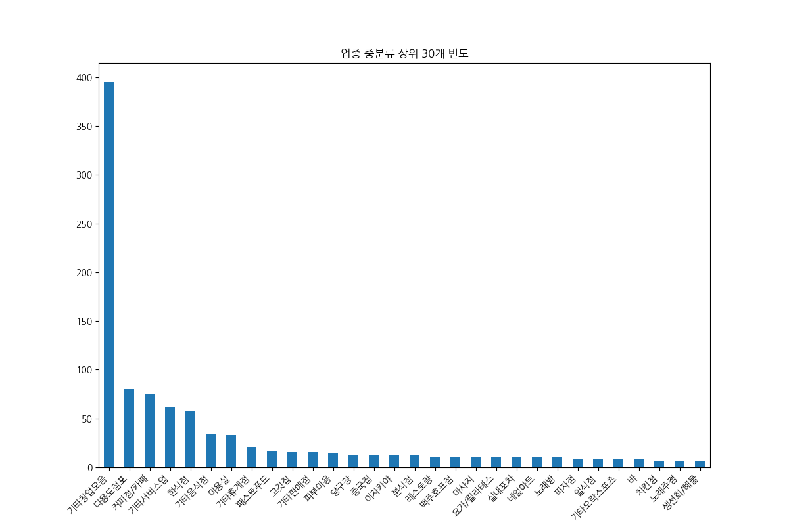
특정 업종(음식점, 사무실 등)의 매물이 압도적으로 많으며, 이는 해당 지역 상권의 주요 성격이 상업 및 업무 시설 위주임을 시사합니다.
'기타창업모음'과 '커피점/카페'의 빈도가 압도적으로 높습니다. 이는 외식업 위주의 공급 과잉 상태를 보여주는 동시에, 식음료 서비스에 집중된 소비 패턴을 반영합니다. 블루오션 전략이 필요한 시점입니다.
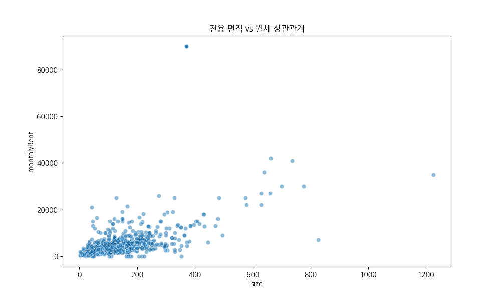
전용 면적이 넓어질수록 월세가 상승하는 양의 상관관계가 관찰되지만, 입지나 건물 상태에 따라 면적이 좁아도 임대료가 높은 매물이 존재합니다.
면적이 좁음에도 월세가 높은 '이상치' 매물들은 입지의 희소성이 극대화된 곳으로, 명품 브랜드나 프리미엄 매장에 적합합니다. 면적 효율성 중심의 투자 기회를 포착해야 합니다.
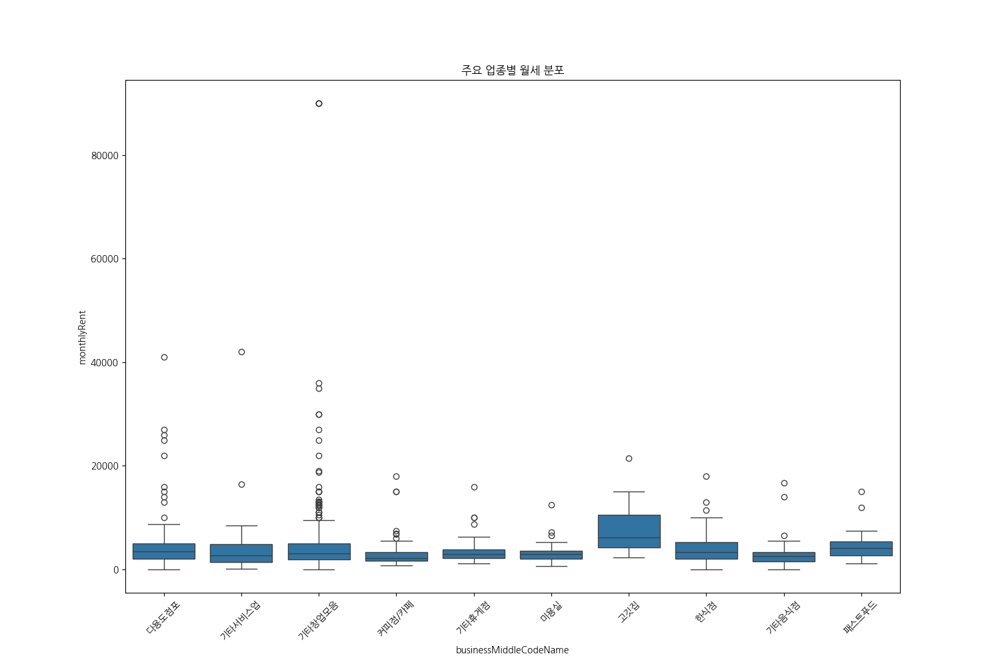
업종에 따라 임대료의 중앙값과 편차가 다르게 나타납니다. 대형 평수가 필요한 업종(고깃집 등)에서 임대료 상한선이 높게 형성됩니다.
'고깃집' 업종의 월세 중앙값이 월등히 높게 형성되어 대형 설비의 필요성을 반영합니다. 카페 업종은 소형부터 대형까지 시장이 극도로 세분화되어 있어 업종별 특수성을 고려한 컨설팅이 필요합니다.
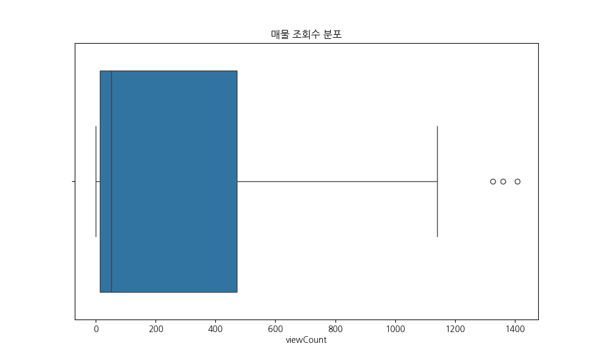
조회수는 극단적인 이상치가 많이 존재하며, 이는 특정 매물에 대한 사용자의 관심도가 매우 높음을 의미합니다.
상위 1%의 매물이 조회수를 독점하고 있습니다. 이러한 매물들의 공통점을 분석하여 '매력적인 매물'의 조건을 정의하고, 추천 시스템을 통해 공급과 수요의 균형을 맞추는 전략이 유효합니다.
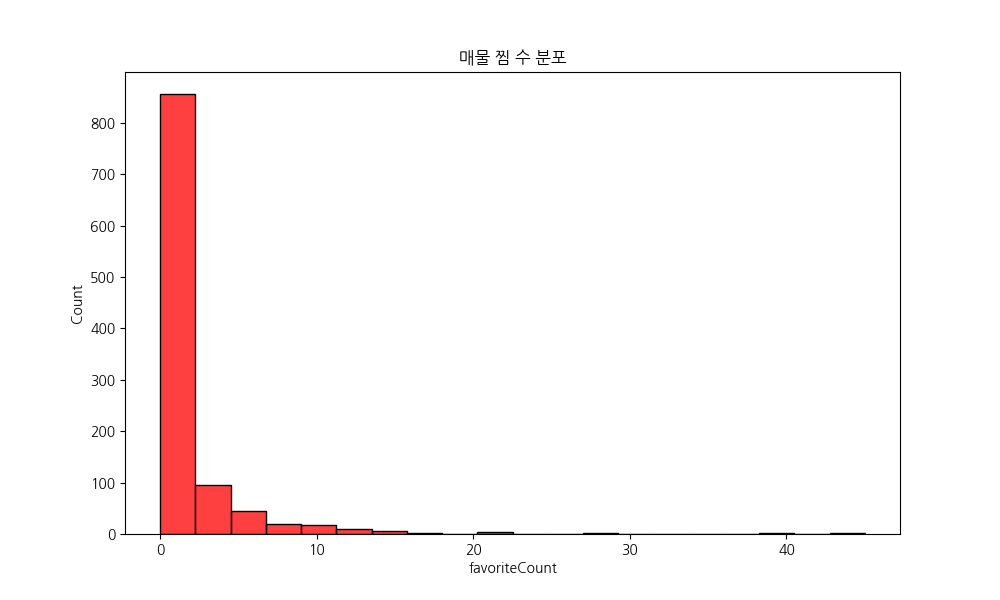
찜 수는 조회수에 비해 낮은 수치를 보이지만, 실제 계약 의사가 높은 매물을 선별하는 지표로 활용될 수 있습니다.
찜 수가 2~3회 이상인 매물은 실계약 성사 가능성이 매우 높습니다. 이러한 진성 고객을 대상으로 한 타겟 마케팅은 전환율을 비약적으로 높일 수 있는 핵심 전략입니다.
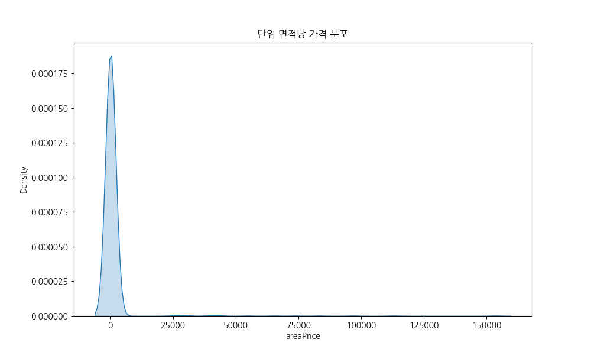
단위 면적당 가격은 상권의 가치를 가장 객관적으로 나타내는 지표로, 특정 지점에서 높은 밀도를 보이는 정규분포를 띱니다.
시장의 적정 시세를 파악하는 기준이 됩니다. 시세보다 낮은 저평가 매물을 발굴하여 리노베이션 등을 통한 밸류업(Value-up) 컨설팅을 제공하는 것이 새로운 비즈니스 기회입니다.
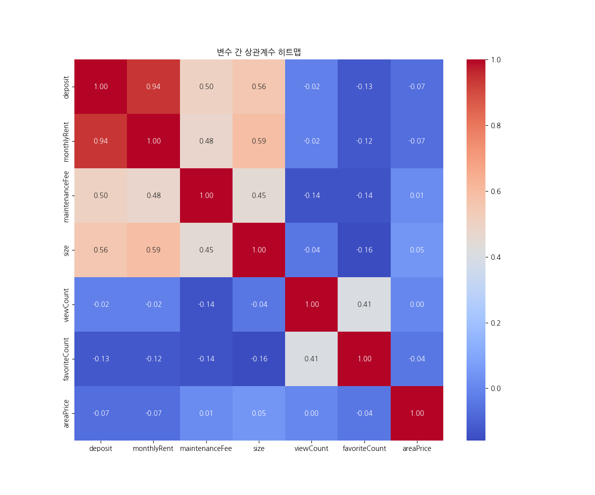
각 변수 간의 관계를 수치로 표현합니다. 월세와 보증금, 면적 간의 상관관계가 0.9 이상으로 매우 뚜렷하게 나타납니다.
가격과 인기도 간의 상관관계가 낮다는 점은 '절대 가격'보다 '입지 대비 가치'가 인기도를 결정하는 핵심 요소임을 시사합니다. 가치 중심의 큐레이션 전략이 필요합니다.
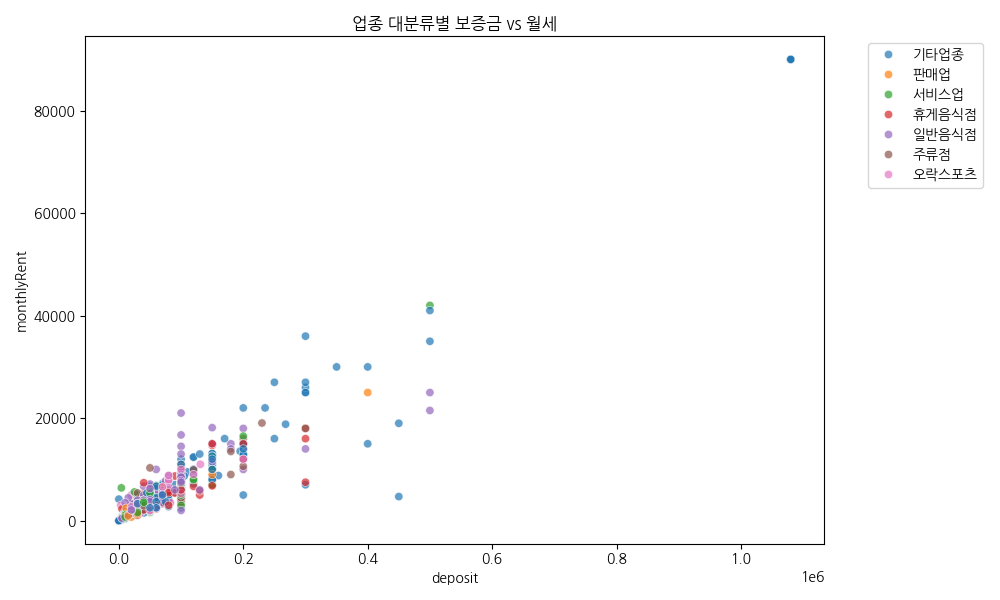
업종 대분류(businessLargeCodeName)에 따른 가격 분포를 비교합니다. 각 업종군이 어느 가격대에 주로 포진해 있는지 시각적으로 확인합니다.
특정 업종이 중고가 영역에 넓게 분포하는 경향을 보일 수 있으며, 이는 해당 업종의 창업 비용이나 임대료 감당 능력을 보여줍니다. 업종별 맞춤형 임대 제안 전략의 근거가 됩니다.
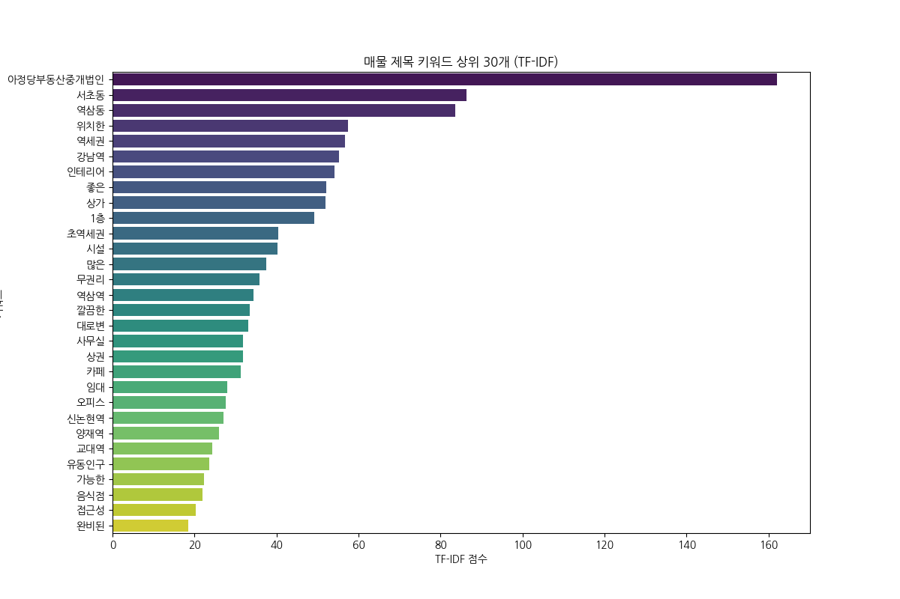
제목에서 변별력이 높은 단어를 추출한 결과입니다. 역삼동, 강남역 등의 지역명과 무권리, 역세권 등의 셀링 포인트가 상위에 랭크되었습니다.
'무권리', '역세권', '인테리어 완비'는 임차인이 가장 매력을 느끼는 USP입니다. 매물 등록 시 이러한 핵심 키워드를 전략적으로 배치하여 클릭률을 극대화해야 합니다.
강남/서초 상업용 부동산 시장은 중앙값 300만 원대의 보편적 매물 시장과 월세 2,000만 원 이상의 프라임 매물 시장이 완전히 분리된 이중 구조를 보이고 있습니다. 타겟별 차별화 마케팅이 필수적입니다.
단순한 절대 가격보다 입지에 따른 예상 매출을 중시하는 시장 특성이 관찰됩니다. '입지 대비 가격 지수'를 개발하여 사용자에게 제시할 때 훨씬 높은 반응과 신뢰를 끌어낼 수 있습니다.
외식업은 레드오션 단계에 진입했습니다. 배달 전문 공유 주방이나 1인 오피스, 전문 클리닉 등 빈도는 낮지만 수요가 집중되는 틈새 업종으로의 전환을 유도하는 컨설팅 전략이 유효합니다.
찜 수와 조회수의 비상관성은 사용자 취향의 다양성을 의미합니다. 단순히 조회수가 높은 매물이 아닌, 각 사용자의 선호 키워드(무권리, 역세권 등)에 맞춘 맞춤형 큐레이션이 플랫폼 경쟁력의 핵심입니다.